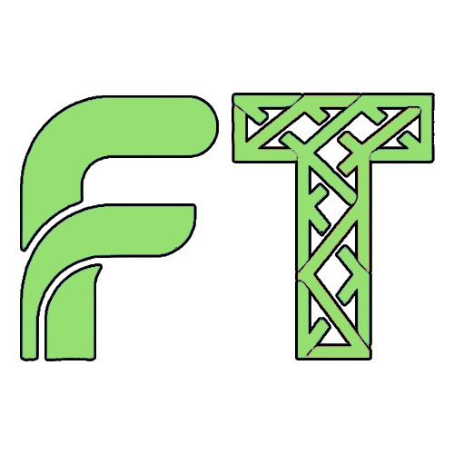
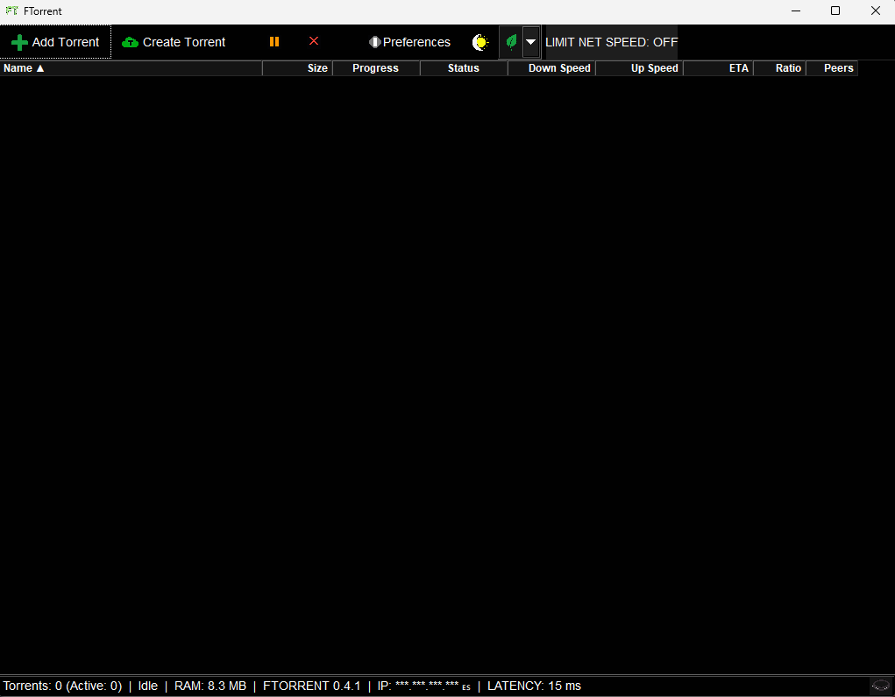

Experience the power of native C++20 performance. A professional-grade, lightweight BitTorrent client engineered for efficiency, speed, and absolute control.

Built with FLTK (Fast Light Toolkit) for a lightning-fast, zero-bloat UI. No Electron, no web-tech, just pure native execution.
Leveraging modern C++20 features to deliver a high-performance binary with minimal resource overhead and maximum stability.
Powered by libtorrent-rasterbar, the industry-standard BitTorrent engine used by the world's most popular clients.
High-frequency update cycles and real-time bandwidth management. Change limits and settings without interrupting your workflow.
Full implementation of DHT, PEX, LSD, and UPnP. Fine-grained control over network encryption and peer discovery.
Optimized for long-running sessions. Extreme efficiency with only 7.6MB RAM footprint, allowing it to run in the background without impacting system performance.
FTorrent is fully compatible with Windows (x86/x64/ARM64) and Linux (x86/x64/ARM64). We provide native DEB and RPM packages for both 32-bit and 64-bit systems, optimized for everything from high-end workstations to Raspberry Pi and legacy hardware.
Total freedom. The source code is available to compile for advanced users who want to build their own custom version.
If you are searching for a uTorrent alternative or a faster qBittorrent rival, FTORRENT is the definitive open-source solution.
Absolutely. If you are looking for a uTorrent alternative without ads and spyware, FTORRENT offers a cleaner, faster experience built on native C++20 code, making it the best choice for 2026.
As a qBittorrent rival, FTORRENT focuses on minimalism and speed. While qBittorrent is feature-rich, FTORRENT uses the FLTK toolkit to ensure a much lower 7.6MB RAM footprint and faster UI response times than both qBittorrent and Transmission.
We support x86 (32-bit) and x64 (64-bit) via native DEB and RPM packages, as well as ARM64 for both Windows and Linux. Whether you are on a legacy PC or a modern ARM device, FTORRENT delivers peak performance.
FTORRENT is architected on the Fast Light Toolkit (FLTK) framework. While many modern clients rely on heavy web-wrappers like Electron, we prioritize low-level execution to ensure the smallest possible binary and memory footprint.
// Native Performance Architecture
#include <libtorrent/session.hpp>
#include <FL/Fl.H>
void FT_Engine::process() {
// Optimized for efficiency
this->release_memory();
this->handle_peers_native();
}Total Downloads: ...
Data sourced from the Official GitHub Repository.